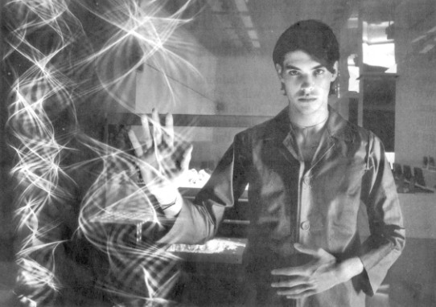

INDEPENDENT ON SUNDAY
13 February 2000
Before the week is out...
Try this
A million miles away from the fast food style of the easyeverything.com cafes, Nutopia is the novelle cuisine of cyberspace. Every ingredient of the futuristic interior is designed to dazzle. No accident as principle designer Alastair Kay specialises in film sets. Its 40 monitor room is diffused with aquamarine lighting, giving an illusion of a submerged pool complete with two aquariums. And the lounge is kitted out with the same futuristic furniture as the club Cream. But the real innovation is Launchpad art space featuring work by fibre optic artists Paul Friedlander, Jason Bruges and Ansel Thompson. A tad pretentious perhaps, but at least there is not a geek in sight.
Nutpia, 42 Shelton Street, London WC2 www.nutopia.net (0171 379 3730)